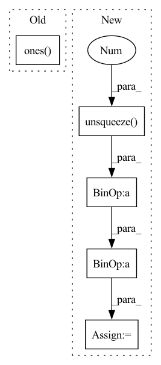

Pattern ID :2799

Before Change
def inverse_rotation_warp(img, rot, intrinsics, padding_mode="zeros"):
b, _, h, w = img.size()
cam_coords = pixel2cam(torch.ones(b, h, w).type_as(
img), intrinsics.inverse()) // [B,3,H,W]
rot_mat = euler2mat(rot) // [B, 3, 3]
After Change
world_points = depth_to_3d(torch.ones(B, 1, H, W).type_as(img), intrinsics) // B 3 H W
cam_points = torch.matmul(P, world_points.view(B, 3, -1))
pix_coords = cam_points[:, :2, :] / (cam_points[:, 2, :].unsqueeze(1) + 1e-7)
pix_coords = pix_coords.view(B, 2, H, W)
pix_coords = pix_coords.permute(0, 2, 3, 1)
pix_coords[..., 0] /= W - 1
pix_coords[..., 1] /= H - 1
In pattern: SUPERPATTERN
Frequency: 3
Non-data size: 5
Instances
Fragment ID: 11146223
Project Name: jiawangbian/sc_depth_pl
Commit Name: 6a50fb9e99035b26acd8d44a2965c6a5b8eaa4da
Time: 2022-08-18
Author: jiawang.bian@gmail.com
File Name: losses/inverse_warp.py
M Class Name: AnonimousClass
N Class Name: AnonimousClass
M Method Name: inverse_rotation_warp(4)
N Method Name: inverse_rotation_warp(4)
M Parent Class:
N Parent Class:
M File Name: losses/inverse_warp.py
N File Name: losses/inverse_warp.py
M Start Line: 275
M End Line: 284
N Start Line: 129
N End Line: 140
'>
Before Change
if "whamr" in self.hparams.data_folder:
targets = self.hparams.reverb(
targets[0].t(), torch.ones(targets.size(-1))
)
targets = targets.t().unsqueeze(0)
mix = targets.sum(-1)
After Change
mix = 0
for mic in rirs:
// rir_cat = torch.flip(torch.stack(mic), [1]).unsqueeze(0)
rir_cat = (torch.stack(mic)).unsqueeze(0)
rir_cat = rir_cat.to(self.device)
mix = mix + F.conv1d(
targets.permute(0, 2, 1), rir_cat
)
mix = mix.squeeze(1)
// fix the levels
coef = (
targets.abs().max().item() / mix.abs().max().item()
)
mix = mix * coef
// torchaudio.save("reverbtest.wav", mix.cpu(), 8000)
// torchaudio.save("target.wav", targets[:, :, 0].cpu(), 8000)
'>
Fragment ID: 11146266
Project Name: speechbrain/speechbrain
Commit Name: 59bc3bf412dc5c1c2e9baf687ede623cc1c4c588
Time: 2021-03-19
Author: csubakan@gmail.com
File Name: recipes/WSJ0Mix/separation/train.py
M Class Name: Separation
N Class Name: Separation
M Method Name: compute_forward(6)
N Method Name: compute_forward(5)
M Parent Class: sb.Brain
N Parent Class: sb.Brain
M File Name: recipes/WSJ0Mix/separation/train.py
N File Name: recipes/WSJ0Mix/separation/train.py
M Start Line: 50
M End Line: 65
N Start Line: 42
N End Line: 79
'>
Before Change
device = rays_o.device
if bg_color is None:
bg_color = torch.ones(3, dtype=rays_o.dtype, device=device)
if self.training:
// setup counter
counter = self.step_counter[self.local_step % 64]
After Change
weights_sum, image = raymarching.composite_rays_train(sigmas, rgbs, deltas, rays, bound)
// composite bg (shade_kernel_nerf)
image = image + (1 - weights_sum).unsqueeze(-1) * bg_color
depth = None // currently training do not requires depth
else:
'>
Fragment ID: 11146272
Project Name: ashawkey/torch-ngp
Commit Name: 70f4c365d38080d4ca08cfab4b8f9d01e7e560b0
Time: 2022-03-10
Author: ashawkey1999@gmail.com
File Name: nerf/renderer.py
M Class Name: NeRFRenderer
N Class Name: NeRFRenderer
M Method Name: run_cuda(8)
N Method Name: run_cuda(8)
M Parent Class: nn.Module
N Parent Class: nn.Module
M File Name: nerf/renderer.py
N File Name: nerf/renderer.py
M Start Line: 230
M End Line: 303
N Start Line: 230
N End Line: 311